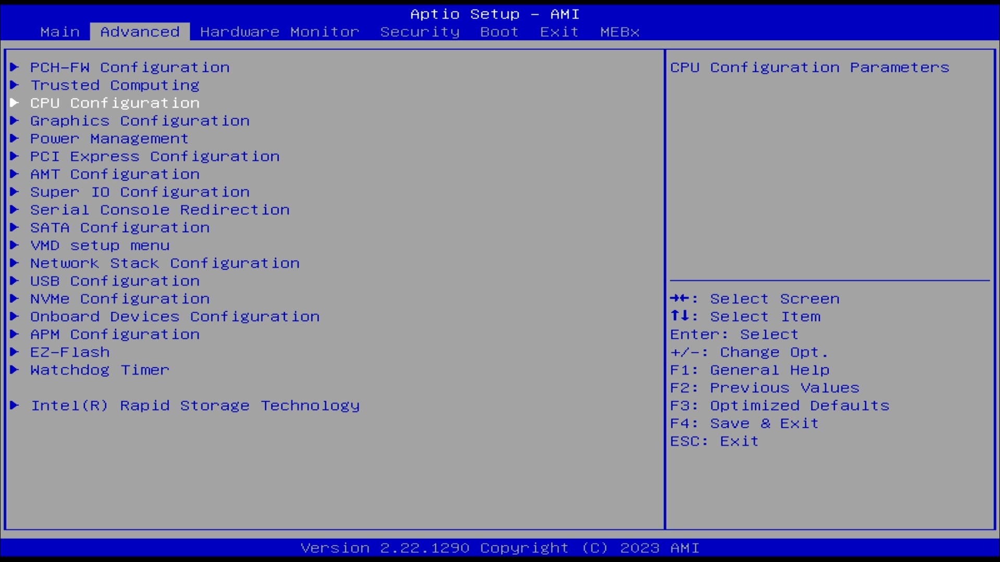
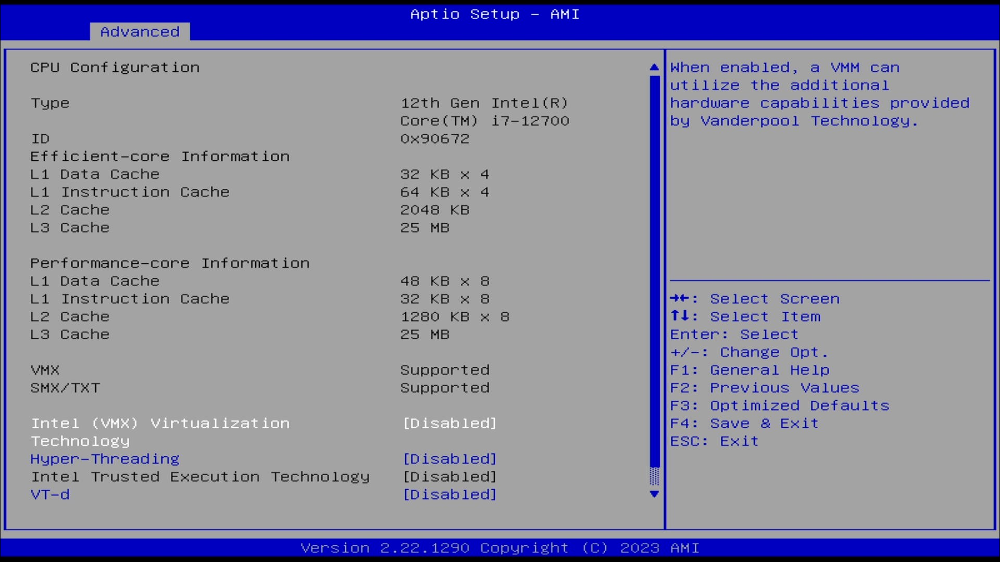
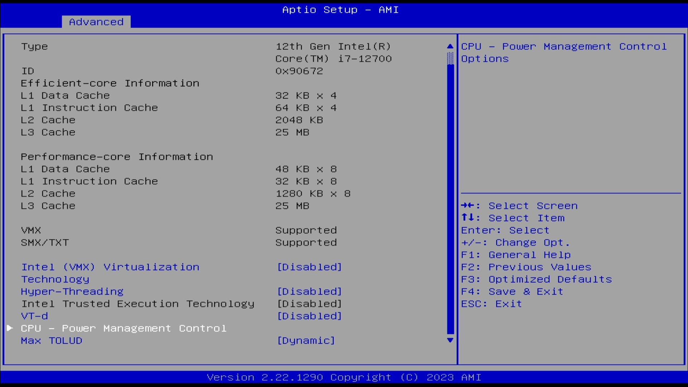
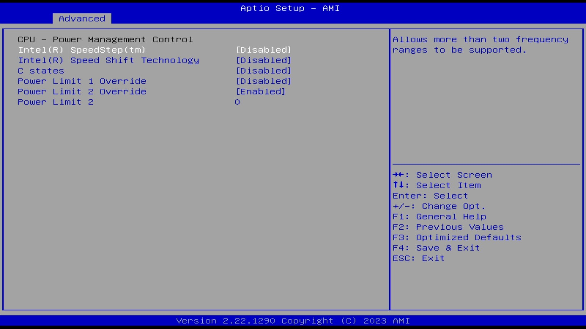
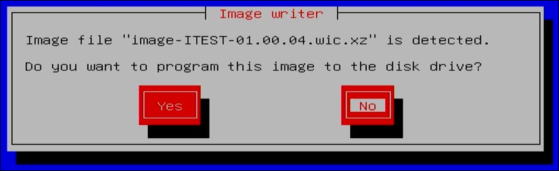
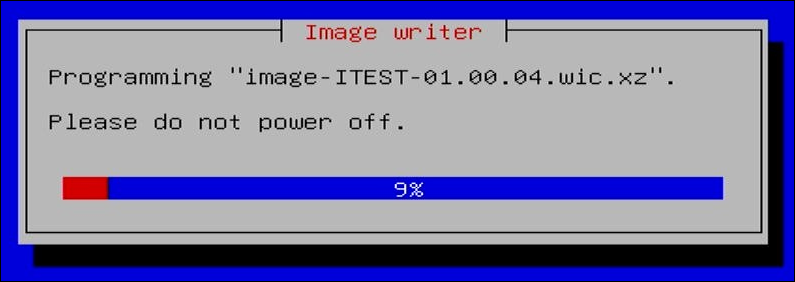
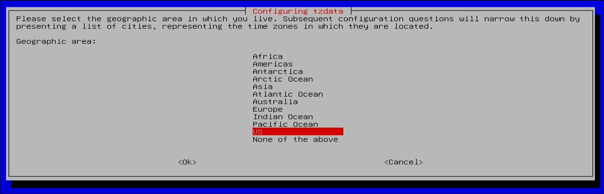
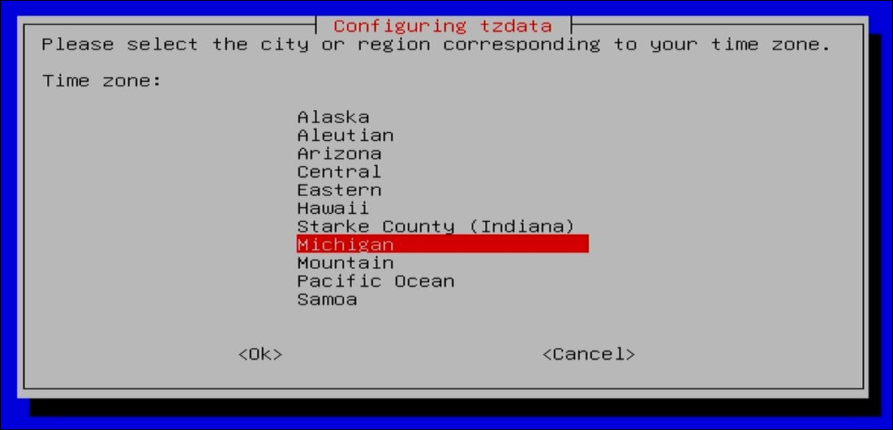
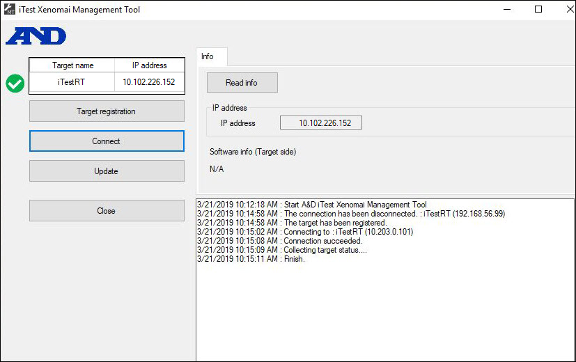

AD-XPRTS Target Environment Installation
Product Version 4.5
Prepared By
ADT Software Engineering
A&D Confidential Document Distributable only to A&D Customers
Copyright A&D Company, Limited
A&D Technology Inc.
Table of Contents
AD-XPRTS Target Environment Installation¶
Introduction¶
This document provides the instructions to prepare an AD-XPRTS Real Time Computer (RTC). The sections below describe the process of installing the open source real-time OS – Xenomai and preparing the AD-XPRTS target environment.
Requirements¶
To install an AD-XPRTS target environment, iConnect RTCs require the following:
- Intel Core series CPU
- RAM 4GB - 32GB
- HDD 10GB - 1TB
- USB Drive (Formatted FAT32)
- NIC with Intel chip
- Confirm that NIC is recognized by an OS when it is booted with USB boot media
iTest Windows Host PC Systems require the following:
- Specification suitable for iTest.Pro
- Including NIC for connection to RTC
- RTC boot drive, minimum of 1GB
The following installation software is required:
- USB image files
- image-ITEST-XX.XX.XX.wic.xz
- image-ITEST-XX.XX.XX.usb.zip
Find the image files available at \\aasvr2.andt.local\SoftwareEngineering\Projects\Xenomai\Images.
Preparation¶
USB Boot Media Preparation¶
To prepare USB boot media for the target PC, do the following:
- Extract the image-ITEST-XX.XX.XXl.usb.zip file to the USB drive.
- Copy image-ITEST-XX.XX.XX.wic.xz to the USB drive.
- Verify the EFI folder is found on the USB drive root directory.
- Verify image-ITEST-XX.XX.XX.wic.xz is found on the USB drive root directory.
Host PC Preparation¶
Configure the network card of your host PC to the 10.102.226.148 static IP address. This will place the host PC and the RTC on the same subnet, allowing for seamless connectivity.
RTC Preparation¶
To prepare your target PC for installation, do the following:
- Connect a keyboard and a monitor to the PC.
- Attach USB boot media to any USB port of the PC.
- Power up the PC and enter to BIOS setup.
- Enter the CPU Configuration screen.
CPU Configuration

- Disable Hyper Threading and VT-d.
Disable Settings

- Enter the CPU - Power Management Control screen.
CPU - Power Management Control

- Enter the CPU - Power Management Control screen and disable SpeedStep, Speed Shift and C States.
Disable Settings

- Enter the BOOT page and set Boot Option 1 to USB and Boot Option 2 to the hdd/sdd.
Boot Configuration

Image Installation¶
RTC¶
- Insert USB drive into the RTC. Preferably use a USB 3.0 port for fastest operation.
- Apply power and wait for USB drive to boot.
- Select the Yes button to both dialogs to start programming the image.
Program Image Prompt

- The progress will display in the following window until completion.
Progress Window

- Acknowledge the Completion dialog.
- Log into the system as
root with the andand password.
- Use the poweroff command to safely power system down.
- Remove the USB boot media.
- Attach an Ethernet cable from a PC to the RJ45 to use for the iTest connection.
- Power the system back on.
- Log into the system as
root with the andand password.
- Run the following command:
itest-setup init.
- Set the geographic time zone (e.g., US).
Configure Geographic Time Zone

- Set the local time zone (e.g., Michigan).
Configure Local Time Zone

- Wait for the setup script to find the iTest connection.
- Reboot the system with the reboot command.
Verification¶
Use the following methods to verify the AD-XPRTS installation.
Ping RTC from Host PC¶
Ping the RTC (i.e., ping 10.102.226.152) using the command window on the host PC.
Telnet to RTC from Host PC¶
Connect to the Remote System using the Telnet utility on the host PC. The host name is 10.102.226.152. Both the user ID and password for login are and.
View directory structure on RTC¶
Navigate the directory structure from the local and remote connections by using the following Linux commands:
Linux Commands
| Command |
Description |
| pwd |
Print the name of the current working directory. |
| cd |
Change the directory. |
| ls |
List the directory's contents. |
iTest Xenomai Management Tool¶
The RTC system is now ready to receive the iTest AD-XPRTS files. The files are transferred from iTest using the iTest Xenomai Management Tool.
Xenomai Management Tool

For further information on the tool, refer to the iTest Xenomai Management Tool documentation.
Patching Xenomai System on RTP PC¶
When patching a Xenomai system on a RTP PC, the RDBServer will look for the following files in the $EXECUTEDIR:
- *.xenomai (except iTestlisten_64.xenomai)
- libremotedb64.so1.0.0
If any of these files are found, the RDBServer will do the following:
- Copies the files to the RTP PC using FTP.
- Creates the $EXECUTEDIR\ADXPRTS_RTP_YYYY_MM_DD_MM_SS subfolder, where YYYY_MM_DD_MM_SS is
Year_Month_Day_Minute_Seconds.
- Moves the files that were FTP copied to the new subfolder. The transferred files act as a backup and prevent the RDBServer from having to copy them every time patching is done.
Notes¶
- There are some files that are updated using the iTest Xenomai Management Tool that are not individually patched. The iTest Xenomai Management Tool is still utilized during updates. In the event where a patch contains a new \\ADXPRTSDevEnv\\target\itestrt_version and individual files, then the RDBServer will refrain from processing the individual files until the iTest Xenomai Management Tool is executed to process the new aandd_adxprts_itestrt_setup.tar.bz2 file.
- Due to the aandd_adxprts_itestrt_setup.tar.bz2 file containing files from the same build, it is possible that this file contains untested versions of components. This can be addressed by copying the untested files from the $EXECUTEDIR\ADXPRTS_RTP_YYYY_MM_DD_MM_SS subfolder back into the $EXECUTEDIR. The aandd_adxprts_itestrt_setup.tar.bz2 file may also contain files with different build numbers from tested patched files even though they have not changed. This will not affect functionality, but it should be kept in mind.
- iTestlisten.xenomai cannot be updated on its own due to this file already running, so iTest cannot successfully FTP copy this file. This file must be updated with the iTest Xenomai Management Tool before any future individual patch files can be applied.